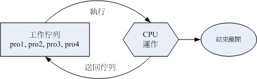

| |
最近升级日期：2009/09/11
3. 程序管理
3.1 程序的观察： ps (ps -l,
ps aux, zombie), top,
pstree
3.2 程序的管理： signal, kill,
killall
3.3 关於程序的运行顺序： priority,
nice, renice
3.4 系统资源的观察： free,
uname, uptime,
netstat, dmesg, vmstat
 程序管理 程序管理
本章一开始就提到所谓的『程序』的概念，包括程序的触发、子程序与父程序的相关性等等，
此外，还有那个『程序的相依性』以及所谓的『僵尸程序』等等需要说明的呢！为什么程序管理这么重要呢？这是因为：
- 首先，本章一开始就谈到的，我们在操作系统时的各项工作其实都是经过某个 PID 来达成的 (包括你的 bash 环境)，
因此，能不能进行某项工作，就与该程序的权限有关了。
- 再来，如果您的 Linux 系统是个很忙碌的系统，那么当整个系统资源快要被使用光时，
您是否能够找出最耗系统的那个程序，然后删除该程序，让系统恢复正常呢？
- 此外，如果由於某个程序写的不好，导致产生一个有问题的程序在内存当中，您又该如何找出他，然后将他移除呢？
- 如果同时有五六项工作在您的系统当中运行，但其中有一项工作才是最重要的，
该如何让那一项重要的工作被最优先运行呢？
所以罗，一个称职的系统管理员，必须要熟悉程序的管理流程才行，否则当系统发生问题时，还真是很难解决问题呢！
底下我们会先介绍如何观察程序与程序的状态，然后再加以程序控制罗！
程序的观察
既然程序这么重要，那么我们如何查阅系统上面正在运行当中的程序呢？很简单啊！
利用静态的 ps 或者是动态的 top，还能以 pstree 来查阅程序树之间的关系喔！
[root@www ~]# ps aux <==观察系统所有的程序数据
[root@www ~]# ps -lA <==也是能够观察所有系统的数据
[root@www ~]# ps axjf <==连同部分程序树状态
选项与参数：
-A ：所有的 process 均显示出来，与 -e 具有同样的效用；
-a ：不与 terminal 有关的所有 process ；
-u ：有效使用者 (effective user) 相关的 process ；
x ：通常与 a 这个参数一起使用，可列出较完整资讯。
输出格式规划：
l ：较长、较详细的将该 PID 的的资讯列出；
j ：工作的格式 (jobs format)
-f ：做一个更为完整的输出。
|
鸟哥个人认为 ps 这个命令的 man page 不是很好查阅，因为很多不同的 Unix 都使用这个 ps 来查阅程序状态，
为了要符合不同版本的需求，所以这个 man page 写的非常的庞大！因此，通常鸟哥都会建议你，直接背两个比较不同的选项，
一个是只能查阅自己 bash 程序的『 ps -l 』一个则是可以查阅所有系统运行的程序『
ps aux 』！注意，你没看错，是『 ps aux 』没有那个减号 (-) ！先来看看关於自己 bash 程序状态的观察：
范例一：将目前属於您自己这次登陆的 PID 与相关资讯列示出来(只与自己的 bash 有关)
[root@www ~]# ps -l
F S UID PID PPID C PRI NI ADDR SZ WCHAN TTY TIME CMD
4 S 0 13639 13637 0 75 0 - 1287 wait pts/1 00:00:00 bash
4 R 0 13700 13639 0 77 0 - 1101 - pts/1 00:00:00 ps
|
系统整体的程序运行是非常多的，但如果使用 ps -l 则仅列出与你的操作环境 (bash) 有关的程序而已，
亦即最上一级的父程序会是你自己的 bash 而没有延伸到 init 这支程序去！那么 ps -l 秀出来的数据有哪些呢？
我们就来观察看看：
- F：代表这个程序旗标 (process flags)，说明这个程序的总结权限，常见号码有：
- S：代表这个程序的状态 (STAT)，主要的状态有：
- R (Running)：该程序正在运行中；
- S (Sleep)：该程序目前正在睡眠状态(idle)，但可以被唤醒(signal)。
- D ：不可被唤醒的睡眠状态，通常这支程序可能在等待 I/O 的情况(ex>列印)
- T ：停止状态(stop)，可能是在工作控制(背景暂停)或除错 (traced) 状态；
- Z (Zombie)：僵尸状态，程序已经终止但却无法被移除至内存外。
- UID/PID/PPID：代表『此程序被该 UID 所拥有/程序的 PID 号码/此程序的父程序 PID 号码』
- C：代表 CPU 使用率，单位为百分比；
- PRI/NI：Priority/Nice 的缩写，代表此程序被 CPU 所运行的优先顺序，数值越小代表该程序越快被
CPU 运行。详细的 PRI 与 NI 将在下一小节说明。
- ADDR/SZ/WCHAN：都与内存有关，ADDR 是 kernel function，指出该程序在内存的哪个部分，如果是个 running
的程序，一般就会显示『 - 』 / SZ 代表此程序用掉多少内存 / WCHAN 表示目前程序是否运行中，同样的，
若为 - 表示正在运行中。
- TTY：登陆者的终端机位置，若为远程登陆则使用动态终端介面 (pts/n)；
- TIME：使用掉的 CPU 时间，注意，是此程序实际花费 CPU 运行的时间，而不是系统时间；
- CMD：就是 command 的缩写，造成此程序的触发程序之命令为何。
所以你看到的 ps -l 输出信息中，他说明的是：『bash 的程序属於 UID 为 0 的使用者，状态为睡眠 (sleep)，
之所以为睡眠因为他触发了 ps (状态为 run) 之故。此程序的 PID 为 13639，优先运行顺序为 75 ，
下达 bash 所取得的终端介面为 pts/1 ，运行状态为等待 (wait) 。』这样已经够清楚了吧？
您自己尝试解析一下那么 ps 那一行代表的意义为何呢？ ^_^
接下来让我们使用 ps 来观察一下系统内所有的程序状态吧！
范例二：列出目前所有的正在内存当中的程序：
[root@www ~]# ps aux
USER PID %CPU %MEM VSZ RSS TTY STAT START TIME COMMAND
root 1 0.0 0.0 2064 616 ? Ss Mar11 0:01 init [5]
root 2 0.0 0.0 0 0 ? S< Mar11 0:00 [migration/0]
root 3 0.0 0.0 0 0 ? SN Mar11 0:00 [ksoftirqd/0]
.....(中间省略).....
root 13639 0.0 0.2 5148 1508 pts/1 Ss 11:44 0:00 -bash
root 14232 0.0 0.1 4452 876 pts/1 R+ 15:52 0:00 ps aux
root 18593 0.0 0.0 2240 476 ? Ss Mar14 0:00 /usr/sbin/atd
|
你会发现 ps -l 与 ps aux 显示的项目并不相同！在 ps aux 显示的项目中，各栏位的意义为：
- USER：该 process 属於那个使用者帐号的？
- PID ：该 process 的程序识别码。
- %CPU：该 process 使用掉的 CPU 资源百分比；
- %MEM：该 process 所占用的实体内存百分比；
- VSZ ：该 process 使用掉的虚拟内存量 (Kbytes)
- RSS ：该 process 占用的固定的内存量 (Kbytes)
- TTY ：该 process 是在那个终端机上面运行，若与终端机无关则显示 ?，另外， tty1-tty6
是本机上面的登陆者程序，若为 pts/0 等等的，则表示为由网络连接进主机的程序。
- STAT：该程序目前的状态，状态显示与 ps -l 的 S 旗标相同 (R/S/T/Z)
- START：该 process 被触发启动的时间；
- TIME ：该 process 实际使用 CPU 运行的时间。
- COMMAND：该程序的实际命令为何？
一般来说，ps aux 会依照 PID 的顺序来排序显示，我们还是以 13639 那个 PID 那行来说明！该行的意义为『
root 运行的 bash PID 为 13639，占用了 0.2% 的内存容量百分比，状态为休眠 (S)，该程序启动的时间为 11:44 ，
且取得的终端机环境为 pts/1 。』与 ps aux 看到的其实是同一个程序啦！这样可以理解吗？
让我们继续使用 ps 来观察一下其他的资讯吧！
范例三：以范例一的显示内容，显示出所有的程序：
[root@www ~]# ps -lA
F S UID PID PPID C PRI NI ADDR SZ WCHAN TTY TIME CMD
4 S 0 1 0 0 76 0 - 435 - ? 00:00:01 init
1 S 0 2 1 0 94 19 - 0 ksofti ? 00:00:00 ksoftirqd/0
1 S 0 3 1 0 70 -5 - 0 worker ? 00:00:00 events/0
....(以下省略)....
# 你会发现每个栏位与 ps -l 的输出情况相同，但显示的程序则包括系统所有的程序。
范例四：列出类似程序树的程序显示：
[root@www ~]# ps axjf
PPID PID PGID SID TTY TPGID STAT UID TIME COMMAND
0 1 1 1 ? -1 Ss 0 0:01 init [5]
.....(中间省略).....
1 4586 4586 4586 ? -1 Ss 0 0:00 /usr/sbin/sshd
4586 13637 13637 13637 ? -1 Ss 0 0:00 \_ sshd: root@pts/1
13637 13639 13639 13639 pts/1 14266 Ss 0 0:00 \_ -bash
13639 14266 14266 13639 pts/1 14266 R+ 0 0:00 \_ ps axjf
.....(后面省略).....
|
看出来了吧？其实鸟哥在进行一些测试时，都是以网络连线进主机来测试的，所以罗，你会发现其实程序之间是有相关性的啦！
不过，其实还可以使用 pstree 来达成这个程序树喔！以上面的例子来看，鸟哥是透过 sshd 提供的网络服务取得一个程序，
该程序提供 bash 给我使用，而我透过 bash 再去运行 ps axjf ！这样可以看的懂了吗？其他各栏位的意义请 man ps
(虽然真的很难 man 的出来！) 罗！
范例五：找出与 cron 与 syslog 这两个服务有关的 PID 号码？
[root@www ~]# ps aux | egrep '(cron|syslog)'
root 4286 0.0 0.0 1720 572 ? Ss Mar11 0:00 syslogd -m 0
root 4661 0.0 0.1 5500 1192 ? Ss Mar11 0:00 crond
root 14286 0.0 0.0 4116 592 pts/1 R+ 16:15 0:00 egrep (cron|syslog)
# 所以号码是 4286 及 4661 这两个罗！就是这样找的啦！
|
除此之外，我们必须要知道的是『僵尸 (zombie) 』程序是什么？
通常，造成僵尸程序的成因是因为该程序应该已经运行完毕，或者是因故应该要终止了，
但是该程序的父程序却无法完整的将该程序结束掉，而造成那个程序一直存在内存当中。
如果你发现在某个程序的 CMD 后面还接上 <defunct> 时，就代表该程序是僵尸程序啦，例如：
apache 8683 0.0 0.9 83384 9992 ? Z 14:33 0:00 /usr/sbin/httpd <defunct>
|
当系统不稳定的时候就容易造成所谓的僵尸程序，可能是因为程序写的不好啦，或者是使用者的操作习惯不良等等所造成。
如果你发现系统中很多僵尸程序时，记得啊！要找出该程序的父程序，然后好好的做个追踪，好好的进行主机的环境最佳化啊！
看看有什么地方需要改善的，不要只是直接将他 kill 掉而已呢！不然的话，万一他一直产生，那可就麻烦了！ @_@
事实上，通常僵尸程序都已经无法控管，而直接是交给 init 这支程序来负责了，偏偏 init 是系统第一支运行的程序，
他是所有程序的父程序！我们无法杀掉该程序的 (杀掉他，系统就死掉了！)，所以罗，如果产生僵尸程序，
而系统过一阵子还没有办法透过核心非经常性的特殊处理来将该程序删除时，那你只好透过 reboot
的方式来将该程序抹去了！
相对於 ps 是撷取一个时间点的程序状态， top 则可以持续侦测程序运行的状态！使用方式如下：
[root@www ~]# top [-d 数字] | top [-bnp]
选项与参数：
-d ：后面可以接秒数，就是整个程序画面升级的秒数。默认是 5 秒；
-b ：以批量的方式运行 top ，还有更多的参数可以使用喔！
通常会搭配数据流重导向来将批量的结果输出成为文件。
-n ：与 -b 搭配，意义是，需要进行几次 top 的输出结果。
-p ：指定某些个 PID 来进行观察监测而已。
在 top 运行过程当中可以使用的按键命令：
? ：显示在 top 当中可以输入的按键命令；
P ：以 CPU 的使用资源排序显示；
M ：以 Memory 的使用资源排序显示；
N ：以 PID 来排序喔！
T ：由该 Process 使用的 CPU 时间累积 (TIME+) 排序。
k ：给予某个 PID 一个讯号 (signal)
r ：给予某个 PID 重新制订一个 nice 值。
q ：离开 top 软件的按键。
|
其实 top 的功能非常多！可以用的按键也非常的多！可以参考 man top 的内部说明文件！
鸟哥这里仅是列出一些鸟哥自己常用的选项而已。接下来让我们实际观察一下如何使用 top 与 top 的画面吧！
范例一：每两秒钟升级一次 top ，观察整体资讯：
[root@www ~]# top -d 2
top - 17:03:09 up 7 days, 16:16, 1 user, load average: 0.00, 0.00, 0.00
Tasks: 80 total, 1 running, 79 sleeping, 0 stopped, 0 zombie
Cpu(s): 0.5%us, 0.5%sy, 0.0%ni, 99.0%id, 0.0%wa, 0.0%hi, 0.0%si, 0.0%st
Mem: 742664k total, 681672k used, 60992k free, 125336k buffers
Swap: 1020088k total, 28k used, 1020060k free, 311156k cached
<==如果加入 k 或 r 时，就会有相关的字样出现在这里喔！
PID USER PR NI VIRT RES SHR S %CPU %MEM TIME+ COMMAND
14398 root 15 0 2188 1012 816 R 0.5 0.1 0:00.05 top
1 root 15 0 2064 616 528 S 0.0 0.1 0:01.38 init
2 root RT -5 0 0 0 S 0.0 0.0 0:00.00 migration/0
3 root 34 19 0 0 0 S 0.0 0.0 0:00.00 ksoftirqd/0
|
top 也是个挺不错的程序观察工具！但不同於 ps 是静态的结果输出， top 这个程序可以持续的监测整个系统的程序工作状态。
在默认的情况下，每次升级程序资源的时间为 5 秒，不过，可以使用 -d 来进行修改。
top 主要分为两个画面，上面的画面为整个系统的资源使用状态，基本上总共有六行，显示的内容依序是：
- 第一行(top...)：这一行显示的资讯分别为：
- 目前的时间，亦即是 17:03:09 那个项目；
- 启动到目前为止所经过的时间，亦即是 up 7days, 16:16 那个项目；
- 已经登陆系统的使用者人数，亦即是 1 user项目；
- 系统在 1, 5, 15 分钟的平均工作负载。我们在第十六章谈到的 batch
工作方式为负载小於 0.8 就是这个负载罗！代表的是 1, 5, 15 分钟，系统平均要负责运行几个程序(工作)的意思。
越小代表系统越闲置，若高於 1 得要注意你的系统程序是否太过繁复了！
- 第二行(Tasks...)：显示的是目前程序的总量与个别程序在什么状态(running, sleeping, stopped, zombie)。
比较需要注意的是最后的 zombie 那个数值，如果不是 0 ！好好看看到底是那个 process 变成僵尸了吧？
- 第三行(Cpus...)：显示的是 CPU 的整体负载，每个项目可使用 ? 查阅。需要特别注意的是 %wa ，那个项目代表的是 I/O wait，
通常你的系统会变慢都是 I/O 产生的问题比较大！因此这里得要注意这个项目耗用 CPU 的资源喔！
另外，如果是多核心的设备，可以按下数字键『1』来切换成不同 CPU 的负载率。
- 第四行与第五行：表示目前的实体内存与虚拟内存 (Mem/Swap) 的使用情况。
再次重申，要注意的是 swap 的使用量要尽量的少！如果 swap 被用的很大量，表示系统的实体内存实在不足！
- 第六行：这个是当在 top 程序当中输入命令时，显示状态的地方。
至於 top 下半部分的画面，则是每个 process 使用的资源情况。比较需要注意的是：
- PID ：每个 process 的 ID 啦！
- USER：该 process 所属的使用者；
- PR ：Priority 的简写，程序的优先运行顺序，越小越早被运行；
- NI ：Nice 的简写，与 Priority 有关，也是越小越早被运行；
- %CPU：CPU 的使用率；
- %MEM：内存的使用率；
- TIME+：CPU 使用时间的累加；
top 默认使用 CPU 使用率 (%CPU) 作为排序的重点，如果你想要使用内存使用率排序，则可以按下『M』，
若要回复则按下『P』即可。如果想要离开 top 则按下『 q 』吧！如果你想要将 top 的结果输出成为文件时，
可以这样做：
范例二：将 top 的资讯进行 2 次，然后将结果输出到 /tmp/top.txt
[root@www ~]# top -b -n 2 > /tmp/top.txt
# 这样一来，嘿嘿！就可以将 top 的资讯存到 /tmp/top.txt 文件中了。
|
这玩意儿很有趣！可以帮助你将某个时段 top 观察到的结果存成文件，可以用在你想要在系统背景底下运行。
由於是背景底下运行，与终端机的萤幕大小无关，因此可以得到全部的程序画面！那如果你想要观察的程序 CPU
与内存使用率都很低，结果老是无法在第一行显示时，该怎办？我们可以仅观察单一程序喔！如下所示：
范例三：我们自己的 bash PID 可由 $$ 变量取得，请使用 top 持续观察该 PID
[root@www ~]# echo $$
13639 <==就是这个数字！他是我们 bash 的 PID
[root@www ~]# top -d 2 -p 13639
top - 17:31:56 up 7 days, 16:45, 1 user, load average: 0.00, 0.00, 0.00
Tasks: 1 total, 0 running, 1 sleeping, 0 stopped, 0 zombie
Cpu(s): 0.0%us, 0.0%sy, 0.0%ni,100.0%id, 0.0%wa, 0.0%hi, 0.0%si, 0.0%st
Mem: 742664k total, 682540k used, 60124k free, 126548k buffers
Swap: 1020088k total, 28k used, 1020060k free, 311276k cached
PID USER PR NI VIRT RES SHR S %CPU %MEM TIME+ COMMAND
13639 root 15 0 5148 1508 1220 S 0.0 0.2 0:00.18 bash
|
看到没！就只会有一支程序给你看！很容易观察吧！好，那么如果我想要在 top 底下进行一些动作呢？
比方说，修改 NI 这个数值呢？可以这样做：
范例四：承上题，上面的 NI 值是 0 ，想要改成 10 的话？
# 在范例三的 top 画面当中直接按下 r 之后，会出现如下的图样！
top - 17:34:24 up 7 days, 16:47, 1 user, load average: 0.00, 0.00, 0.00
Tasks: 1 total, 0 running, 1 sleeping, 0 stopped, 0 zombie
Cpu(s): 0.0%us, 0.0%sy, 0.0%ni, 99.5%id, 0.0%wa, 0.0%hi, 0.5%si, 0.0%st
Mem: 742664k total, 682540k used, 60124k free, 126636k buffers
Swap: 1020088k total, 28k used, 1020060k free, 311276k cached
PID to renice: 13639 <==按下 r 然后输入这个 PID 号码
PID USER PR NI VIRT RES SHR S %CPU %MEM TIME+ COMMAND
13639 root 15 0 5148 1508 1220 S 0.0 0.2 0:00.18 bash
|
在你完成上面的动作后，在状态列会出现如下的资讯：
Renice PID 13639 to value: 10 <==这是 nice 值
PID USER PR NI VIRT RES SHR S %CPU %MEM TIME+ COMMAND
|
接下来你就会看到如下的显示画面！
top - 17:38:58 up 7 days, 16:52, 1 user, load average: 0.00, 0.00, 0.00
Tasks: 1 total, 0 running, 1 sleeping, 0 stopped, 0 zombie
Cpu(s): 0.0%us, 0.0%sy, 0.0%ni,100.0%id, 0.0%wa, 0.0%hi, 0.0%si, 0.0%st
Mem: 742664k total, 682540k used, 60124k free, 126648k buffers
Swap: 1020088k total, 28k used, 1020060k free, 311276k cached
PID USER PR NI VIRT RES SHR S %CPU %MEM TIME+ COMMAND
13639 root 26 10 5148 1508 1220 S 0.0 0.2 0:00.18 bash
|
看到不同处了吧？底线的地方就是修改了之后所产生的效果！一般来说，如果鸟哥想要找出最损耗 CPU
资源的那个程序时，大多使用的就是 top 这支程序啦！然后强制以 CPU 使用资源来排序 (在 top 当中按下 P 即可)，
就可以很快的知道啦！ ^_^。多多爱用这个好用的东西喔！
[root@www ~]# pstree [-A|U] [-up]
选项与参数：
-A ：各程序树之间的连接以 ASCII 字节来连接；
-U ：各程序树之间的连接以万国码的字节来连接。在某些终端介面下可能会有错误；
-p ：并同时列出每个 process 的 PID；
-u ：并同时列出每个 process 的所属帐号名称。
范例一：列出目前系统上面所有的程序树的相关性：
[root@www ~]# pstree -A
init-+-acpid
|-atd
|-auditd-+-audispd---{audispd} <==这行与底下一行为 auditd 分出来的子程序
| `-{auditd}
|-automount---4*[{automount}] <==默认情况下，相似的程序会以数字显示
....(中间省略)....
|-sshd---sshd---bash---pstree <==就是我们命令运行的那个相依性！
....(底下省略)....
# 注意一下，为了节省版面，所以鸟哥已经删去很多程序了！
范例二：承上题，同时秀出 PID 与 users
[root@www ~]# pstree -Aup
init(1)-+-acpid(4555)
|-atd(18593)
|-auditd(4256)-+-audispd(4258)---{audispd}(4261)
| `-{auditd}(4257)
|-automount(4536)-+-{automount}(4537) <==程序相似但 PID 不同！
| |-{automount}(4538)
| |-{automount}(4541)
| `-{automount}(4544)
....(中间省略)....
|-sshd(4586)---sshd(16903)---bash(16905)---pstree(16967)
....(中间省略)....
|-xfs(4692,xfs) <==因为此程序拥有者并非运行 pstree 者！所以列出帐号
....(底下省略)....
# 在括号 () 内的即是 PID 以及该程序的 owner 喔！不过，由於我是使用
# root 的身份运行此一命令，所以属於 root 的程序就不会显示出来啦！
|
如果要找程序之间的相关性，这个 pstree 真是好用到不行！直接输入 pstree
可以查到程序相关性，如上表所示，还会使用线段将相关性程序连结起来哩！
一般连结符号可以使用 ASCII 码即可，但有时因为语系问题会主动的以 Unicode 的符号来连结，
但因为可能终端机无法支持该编码，或许会造成乱码问题。因此可以加上 -A 选项来克服此类线段乱码问题。
由 pstree 的输出我们也可以很清楚的知道，所有的程序都是依附在 init 这支程序底下的！
仔细看一下，这支程序的 PID 是一号喔！因为他是由 Linux 核心所主动呼叫的第一支程序！所以 PID 就是一号了。
这也是我们刚刚提到僵尸程序时有提到，为啥发生僵尸程序需要重新启动？
因为 init 要重新启动，而重新启动 init 就是 reboot 罗！
如果还想要知道 PID 与所属使用者，加上 -u 及 -p 两个参数即可。我们前面不是一直提到，
如果子程序挂点或者是老是砍不掉子程序时，该如何找到父程序吗？呵呵！用这个 pstree 就对了！ ^_^
程序的管理
程序之间是可以互相控制的！举例来说，你可以关闭、重新启动服务器软件，服务器软件本身是个程序，
你既然可以让她关闭或启动，当然就是可以控制该程序啦！那么程序是如何互相管理的呢？其实是透过给予该程序一个讯号 (signal)
去告知该程序你想要让她作什么！因此这个讯号就很重要啦！
我们也在本章之前的 bash 工作管理当中提到过，
要给予某个已经存在背景中的工作某些动作时，是直接给予一个讯号给该工作号码即可。那么到底有多少 signal 呢？
你可以使用 kill -l (小写的 L ) 或者是 man 7 signal 都可以查询到！主要的讯号代号与名称对应及内容是：
| 代号 | 名称 | 内容 |
| 1 | SIGHUP | 启动被终止的程序，可让该 PID 重新读取自己的配置档，类似重新启动 |
| 2 | SIGINT | 相当於用键盘输入 [ctrl]-c 来中断一个程序的进行 |
| 9 | SIGKILL | 代表强制中断一个程序的进行，如果该程序进行到一半，
那么尚未完成的部分可能会有『半产品』产生，类似 vim会有 .filename.swp 保留下来。 |
| 15 | SIGTERM | 以正常的结束程序来终止该程序。由於是正常的终止，
所以后续的动作会将他完成。不过，如果该程序已经发生问题，就是无法使用正常的方法终止时，
输入这个 signal 也是没有用的。 |
| 17 | SIGSTOP | 相当於用键盘输入 [ctrl]-z 来暂停一个程序的进行 |
上面仅是常见的 signal 而已，更多的讯号资讯请自行 man 7 signal 吧！一般来说，你只要记得『1, 9,
15』这三个号码的意义即可。那么我们如何传送一个讯号给某个程序呢？就透过 kill 或 killall 吧！底下分别来看看：
kill 可以帮我们将这个 signal 传送给某个工作 (%jobnumber) 或者是某个 PID (直接输入数字)。
要再次强调的是： kill 后面直接加数字与加上 %number 的情况是不同的！
这个很重要喔！因为工作控制中有 1 号工作，但是 PID 1 号则是专指『 init 』这支程序！你怎么可以将 init 关闭呢？
关闭 init ，你的系统就当掉了啊！所以记得那个 % 是专门用在工作控制的喔！
我们就活用一下 kill 与刚刚上面提到的 ps 来做个简单的练习吧！
|
例题：
以 ps 找出 syslog 这个程序的 PID 后，再使用 kill 传送信息，使得 syslog 可以重新读取配置档。
答：
由於需要重新读取配置档，因此 signal 是 1 号。至於找出 syslog 的 PID 可以是这样做：
ps aux | grep 'syslog' | grep -v 'grep'| awk '{print $2}'
接下来则是实际使用 kill -1 PID，因此，整串命令会是这样：
kill -SIGHUP $(ps aux|grep 'syslog'|grep -v 'grep'|awk '{print $2}')
如果要确认有没有重新启动 syslog ，可以参考登录档的内容，使用如下命令查阅：
tail -5 /var/log/messages
如果你有看到类似『Mar 19 15:08:20 www syslogd 1.4.1: restart』之类的字样，就是表示 syslogd 在 3/19 有重新启动 (restart) 过了！
|
了解了这个用法以后，如果未来你想要将某个莫名其妙的登陆者的连线删除的话，就可以透过使用 pstree -p 找到相关程序，
然后再以 kill -9 将该程序删除，该条连线就会被踢掉了！这样很简单吧！
由於 kill 后面必须要加上 PID (或者是 job number)，所以，通常 kill 都会配合
ps, pstree 等命令，因为我们必须要找到相对应的那个程序的
ID 嘛！但是，如此一来，很麻烦～有没有可以利用『下达命令的名称』来给予讯号的？举例来说，能不能直接将 syslog
这个程序给予一个 SIGHUP 的讯号呢？可以的！用 killall 吧！
[root@www ~]# killall [-iIe] [command name]
选项与参数：
-i ：interactive 的意思，互动式的，若需要删除时，会出现提示字节给使用者；
-e ：exact 的意思，表示『后面接的 command name 要一致』，但整个完整的命令
不能超过 15 个字节。
-I ：命令名称(可能含参数)忽略大小写。
范例一：给予 syslogd 这个命令启动的 PID 一个 SIGHUP 的讯号
[root@www ~]# killall -1 syslogd
# 如果用 ps aux 仔细看一下，syslogd 才是完整的命令名称。但若包含整个参数，
# 则 syslogd -m 0 才是完整的呢！
范例二：强制终止所有以 httpd 启动的程序
[root@www ~]# killall -9 httpd
范例三：依次询问每个 bash 程序是否需要被终止运行！
[root@www ~]# killall -i -9 bash
Kill bash(16905) ? (y/N) n <==这个不杀！
Kill bash(17351) ? (y/N) y <==这个杀掉！
# 具有互动的功能！可以询问你是否要删除 bash 这个程序。要注意，若没有 -i 的参数，
# 所有的 bash 都会被这个 root 给杀掉！包括 root 自己的 bash 喔！ ^_^
|
总之，要删除某个程序，我们可以使用 PID 或者是启动该程序的命令名称，
而如果要删除某个服务呢？呵呵！最简单的方法就是利用 killall ，
因为他可以将系统当中所有以某个命令名称启动的程序全部删除。
举例来说，上面的范例二当中，系统内所有以 httpd 启动的程序，就会通通的被删除啦！ ^_^
关於程序的运行顺序
我们知道 Linux 是多人多工的环境，由 top 的输出结果我们也发现，
系统同时间有非常多的程序在运行中，只是绝大部分的程序都在休眠 (sleeping) 状态而已。
想一想，如果所有的程序同时被唤醒，那么 CPU 应该要先处理那个程序呢？也就是说，那个程序被运行的优先序比较高？
这就得要考虑到程序的优先运行序 (Priority) 与 CPU 排程罗！
Tips:
CPU 排程与前一章的例行性工作排程并不一样。 CPU 排程指的是每支程序被 CPU 运行的演算守则，
而例行性工作排程则是将某支程序安排在某个时间再交由系统运行。 CPU 排程与操作系统较具有相关性！
|  |
我们知道 CPU 一秒钟可以运行多达数 G 的微命令次数，透过核心的 CPU 排程可以让各程序被 CPU 所切换运行，
因此每个程序在一秒钟内或多或少都会被 CPU 运行部分的命令码。如果程序都是集中在一个伫列中等待 CPU 的运行，
而不具有优先顺序之分，也就是像我们去游乐场玩热门游戏需要排队一样，每个人都是照顺序来！
你玩过一遍后还想再玩 (没有运行完毕)，请到后面继续排队等待。情况有点像底下这样：

图 3.3.1、并没有优先顺序的程序伫列示意图
上图中假设 pro1, pro2 是紧急的程序， pro3, pro4 是一般的程序，在这样的环境中，由於不具有优先顺序，
唉啊！pro1, pro2 还是得要继续等待而没有优待呢！如果 pro3, pro4 的工作又臭又长！那么紧急的 pro1, pro2
就得要等待个老半天才能够完成！真麻烦啊！所以罗，我们想要将程序分优先顺序啦！如果优先序较高则运行次数可以较多次，
而不需要与较慢优先的程序抢位置！我们可以将程序的优先顺序与 CPU 排程进行如下图的解释：

图 3.3.2、具有优先顺序的程序伫列示意图
如上图所示，具高优先权的 pro1, pro2 可以被取用两次，而较不重要的 pro3, pro4 则运行次数较少。
如此一来 pro1, pro2 就可以较快被完成啦！要注意，上图仅是示意图，并非较优先者一定会被运行两次啦！
为了要达到上述的功能，我们 Linux 给予程序一个所谓的『优先运行序 (priority, PRI)』，
这个 PRI 值越低代表越优先的意思。不过这个 PRI 值是由核心动态调整的，
使用者无法直接调整 PRI 值的。先来瞧瞧 PRI 曾在哪里出现？
[root@www ~]# ps -l
F S UID PID PPID C PRI NI ADDR SZ WCHAN TTY TIME CMD
4 S 0 18625 18623 2 75 0 - 1514 wait pts/1 00:00:00 bash
4 R 0 18653 18625 0 77 0 - 1102 - pts/1 00:00:00 ps
|
由於 PRI 是核心动态调整的，我们使用者也无权去干涉 PRI ！那如果你想要调整程序的优先运行序时，就得要透过 Nice
值了！Nice 值就是上表的 NI 啦！一般来说， PRI 与 NI 的相关性如下：
PRI(new) = PRI(old) + nice
不过你要特别留意到，如果原本的 PRI 是 50 ，并不是我们给予一个 nice = 5 ，就会让 PRI 变成 55 喔！
因为 PRI 是系统『动态』决定的，所以，虽然 nice 值是可以影响 PRI ，不过，
最终的 PRI 仍是要经过系统分析后才会决定的。另外， nice 值是有正负的喔，而既然 PRI 越小越早被运行，
所以，当 nice 值为负值时，那么该程序就会降低 PRI
值，亦即会变的较优先被处理。此外，你必须要留意到：
- nice 值可调整的范围为 -20 ~ 19 ；
- root 可随意调整自己或他人程序的 Nice 值，且范围为 -20 ~ 19 ；
- 一般使用者仅可调整自己程序的 Nice 值，且范围仅为 0 ~ 19 (避免一般用户抢占系统资源)；
- 一般使用者仅可将 nice 值越调越高，例如本来 nice 为 5 ，则未来仅能调整到大於 5；
这也就是说，要调整某个程序的优先运行序，就是『调整该程序的 nice 值』啦！那么如何给予某个程序 nice
值呢？有两种方式，分别是：
- 一开始运行程序就立即给予一个特定的 nice 值：用 nice 命令；
- 调整某个已经存在的 PID 的 nice 值：用 renice 命令。
[root@www ~]# nice [-n 数字] command
选项与参数：
-n ：后面接一个数值，数值的范围 -20 ~ 19。
范例一：用 root 给一个 nice 值为 -5 ，用於运行 vi ，并观察该程序！
[root@www ~]# nice -n -5 vi &
[1] 18676
[root@www ~]# ps -l
F S UID PID PPID C PRI NI ADDR SZ WCHAN TTY TIME CMD
4 S 0 18625 18623 0 75 0 - 1514 wait pts/1 00:00:00 bash
4 T 0 18676 18625 0 72 -5 - 1242 finish pts/1 00:00:00 vi
4 R 0 18678 18625 0 77 0 - 1101 - pts/1 00:00:00 ps
# 原本的 bash PRI 为 75 ，所以 vi 默认应为 75。不过由於给予 nice 为 -5 ，
# 因此 vi 的 PRI 降低了！但并非降低到 70 ，因为核心还会动态调整！
[root@www ~]# kill -9 %1 <==测试完毕将 vi 关闭
|
就如同前面说的， nice 是用来调整程序的运行优先顺序！这里只是一个运行的范例罢了！
通常什么时候要将 nice 值调大呢？举例来说，系统的背景工作中，
某些比较不重要的程序之进行：例如备份工作！由於备份工作相当的耗系统资源，
这个时候就可以将备份的命令之 nice 值调大一些，可以使系统的资源分配的更为公平！
[root@www ~]# renice [number] PID
选项与参数：
PID ：某个程序的 ID 啊！
范例一：找出自己的 bash PID ，并将该 PID 的 nice 调整到 10
[root@www ~]# ps -l
F S UID PID PPID C PRI NI ADDR SZ WCHAN TTY TIME CMD
4 S 0 18625 18623 0 75 0 - 1514 wait pts/1 00:00:00 bash
4 R 0 18712 18625 0 77 0 - 1102 - pts/1 00:00:00 ps
[root@www ~]# renice 10 18625
18625: old priority 0, new priority 10
[root@www ~]# ps -l
F S UID PID PPID C PRI NI ADDR SZ WCHAN TTY TIME CMD
4 S 0 18625 18623 0 85 10 - 1514 wait pts/1 00:00:00 bash
4 R 0 18715 18625 0 87 10 - 1102 - pts/1 00:00:00 ps
|
如果要调整的是已经存在的某个程序的话，那么就得要使用 renice 了。使用的方法很简单，
renice 后面接上数值及 PID 即可。因为后面接的是 PID ，所以你务必要以 ps
或者其他程序观察的命令去找出 PID 才行啊！
由上面这个范例当中我们也看的出来，虽然修改的是 bash 那个程序，但是该程序所触发的 ps
命令当中的 nice 也会继承而为 10 喔！了解了吧！整个 nice 值是可以在父程序 --> 子程序之间传递的呢！
另外，除了 renice 之外，其实那个 top 同样的也是可以调整 nice 值的！
系统资源的观察
除了系统的程序之外，我们还必须就系统的一些资源进行检查啊！举例来说，我们使用 top
可以看到很多系统的资源对吧！那么，还有没有其他的工具可以查阅的？
当然有啊！底下这些工具命令可以玩一玩！
[root@www ~]# free [-b|-k|-m|-g] [-t]
选项与参数：
-b ：直接输入 free 时，显示的单位是 Kbytes，我们可以使用 b(bytes), m(Mbytes)
k(Kbytes), 及 g(Gbytes) 来显示单位喔！
-t ：在输出的最终结果，显示实体内存与 swap 的总量。
范例一：显示目前系统的内存容量
[root@www ~]# free -m
total used free shared buffers cached
Mem: 725 666 59 0 132 287
-/+ buffers/cache: 245 479
Swap: 996 0 996
|
仔细看看，我的系统当中有 725MB 左右的实体内存，我的 swap 有 1GB 左右，
那我使用 free -m 以 MBytes 来显示时，就会出现上面的资讯。Mem 那一行显示的是实体内存的量，
Swap 则是虚拟内存的量。 total 是总量， used 是已被使用的量， free 则是剩余可用的量。
后面的 shared/buffers/cached 则是在已被使用的量当中，用来作为缓冲及缓存的量。
仔细的看到范例一的输出喔，我们的 Linux 测试用主机是很平凡的，根本没有什么工作，
但是，我的实体内存是几乎被用光光的情况呢！不过，至少有 132MB 用在缓冲记忆 (buffers) 工作，
287MB 则用在缓存 (cached) 工作，也就是说，系统是『很有效率的将所有的内存用光光』，
目的是为了让系统的存取效能加速啦！
很多朋友都会问到这个问题『我的系统明明很轻松，为何内存会被用光光？』现在了了吧？
被用光是正常的！而需要注意的反而是 swap 的量。一般来说， swap 最好不要被使用，尤其 swap 最好不要被使用超过 20% 以上，
如果您发现 swap 的用量超过 20% ，那么，最好还是买实体内存来插吧！
因为， Swap 的效能跟实体内存实在差很多，而系统会使用到 swap ，
绝对是因为实体内存不足了才会这样做的！如此，了解吧！
Tips:
Linux 系统为了要加速系统效能，所以会将最常使用到的或者是最近使用到的文件数据缓存 (cache) 下来，
这样未来系统要使用该文件时，就直接由内存中搜寻取出，而不需要重新读取硬盘，速度上面当然就加快了！
因此，实体内存被用光是正常的喔！
| |
[root@www ~]# uname [-asrmpi]
选项与参数：
-a ：所有系统相关的资讯，包括底下的数据都会被列出来；
-s ：系统核心名称
-r ：核心的版本
-m ：本系统的硬件名称，例如 i686 或 x86_64 等；
-p ：CPU 的类型，与 -m 类似，只是显示的是 CPU 的类型！
-i ：硬件的平台 (ix86)
范例一：输出系统的基本资讯
[root@www ~]# uname -a
Linux www.vbird.tsai 2.6.18-92.el5 #1 SMP Tue Jun 10 18:49:47 EDT 2008 i686
i686 i386 GNU/Linux
|
这个咚咚我们前面使用过很多次了喔！uname 可以列出目前系统的核心版本、
主要硬件平台以及 CPU 类型等等的资讯。以上面范例一的状态来说，我的 Linux
主机使用的核心名称为 Linux，而主机名称为 www.vbird.tsai，核心的版本为
2.6.18-92.el5 ，该核心版本创建的日期为 2008/6/10，适用的硬件平台为 i386 以上等级的硬件平台喔。
这个命令很单纯呢！就是显示出目前系统已经启动多久的时间，以及 1, 5, 15
分钟的平均负载就是了。还记得 top 吧？没错啦！这个 uptime 可以显示出 top 画面的最上面一行！
[root@www ~]# uptime
15:39:13 up 8 days, 14:52, 1 user, load average: 0.00, 0.00, 0.00
# top 这个命令已经谈过相关资讯，不再聊！
|
这个 netstat 也是挺好玩的，其实这个命令比较常被用在网络的监控方面，不过，在程序管理方面也是需要了解的啦！
这个命令的运行如下所示：基本上， netstat 的输出分为两大部分，分别是网络与系统自己的程序相关性部分：
[root@www ~]# netstat -[atunlp]
选项与参数：
-a ：将目前系统上所有的连线、监听、Socket 数据都列出来
-t ：列出 tcp 网络封包的数据
-u ：列出 udp 网络封包的数据
-n ：不以程序的服务名称，以埠号 (port number) 来显示；
-l ：列出目前正在网络监听 (listen) 的服务；
-p ：列出该网络服务的程序 PID
范例一：列出目前系统已经创建的网络连线与 unix socket 状态
[root@www ~]# netstat
Active Internet connections (w/o servers) <==与网络较相关的部分
Proto Recv-Q Send-Q Local Address Foreign Address State
tcp 0 132 192.168.201.110:ssh 192.168.:vrtl-vmf-sa ESTABLISHED
Active UNIX domain sockets (w/o servers) <==与本机的程序自己的相关性(非网络)
Proto RefCnt Flags Type State I-Node Path
unix 20 [ ] DGRAM 9153 /dev/log
unix 3 [ ] STREAM CONNECTED 13317 /tmp/.X11-unix/X0
unix 3 [ ] STREAM CONNECTED 13233 /tmp/.X11-unix/X0
unix 3 [ ] STREAM CONNECTED 13208 /tmp/.font-unix/fs7100
....(中间省略)....
|
在上面的结果当中，显示了两个部分，分别是网络的连线以及 linux 上面的 socket 程序相关性部分。
我们先来看看网际网络连线情况的部分：
- Proto ：网络的封包协议，主要分为 TCP 与 UDP 封包，相关数据请参考服务器篇；
- Recv-Q：非由使用者程序连结到此 socket 的复制的总 bytes 数；
- Send-Q：非由远程主机传送过来的 acknowledged 总 bytes 数；
- Local Address ：本地端的 IP:port 情况
- Foreign Address：远程主机的 IP:port 情况
- State ：连线状态，主要有创建(ESTABLISED)及监听(LISTEN)；
我们看上面仅有一条连线的数据，他的意义是：『透过 TCP 封包的连线，远程的 192.168.:vrtl.. 连线到本地端的
192.168.201.110:ssh ，这条连线状态是创建 (ESTABLISHED) 的状态！』至於更多的网络环境说明，
就得到鸟哥的另一本服务器篇查阅罗！
除了网络上的连线之外，其实 Linux 系统上面的程序是可以接收不同程序所发送来的资讯，那就是 Linux 上头的插槽档
(socket file)。我们在第六章的文件种类有稍微提到 socket 文件，
但当时未谈到程序的概念，所以没有深入谈论。socket file 可以沟通两个程序之间的资讯，因此程序可以取得对方传送过来的数据。
由於有 socket file，因此类似 X Window 这种需要透过网络连接的软件，目前新版的 distributions 就以 socket
来进行窗口介面的连线沟通了。上表中 socket file 的输出栏位有：
- Proto ：一般就是 unix 啦；
- RefCnt：连接到此 socket 的程序数量；
- Flags ：连线的旗标；
- Type ：socket 存取的类型。主要有确认连线的 STREAM 与不需确认的 DGRAM 两种；
- State ：若为 CONNECTED 表示多个程序之间已经连线创建。
- Path ：连接到此 socket 的相关程序的路径！或者是相关数据输出的路径。
以上表的输出为例，最后那三行在 /tmp/.xx 底下的数据，就是 X Window 窗口介面的相关程序啦！
而 PATH 指向的就是这些程序要交换数据的插槽文件罗！好！那么 netstat 可以帮我们进行什么任务呢？
很多喔！我们先来看看，利用 netstat 去看看我们的哪些程序有启动哪些网络的『后门』呢？
范例二：找出目前系统上已在监听的网络连线及其 PID
[root@www ~]# netstat -tlnp
Active Internet connections (only servers)
Proto Recv-Q Send-Q Local Address Foreign Address State PID/Program name
tcp 0 0 127.0.0.1:2208 0.0.0.0:* LISTEN 4566/hpiod
tcp 0 0 0.0.0.0:111 0.0.0.0:* LISTEN 4328/portmap
tcp 0 0 127.0.0.1:631 0.0.0.0:* LISTEN 4597/cupsd
tcp 0 0 0.0.0.0:728 0.0.0.0:* LISTEN 4362/rpc.statd
tcp 0 0 127.0.0.1:25 0.0.0.0:* LISTEN 4629/sendmail:
tcp 0 0 127.0.0.1:2207 0.0.0.0:* LISTEN 4571/python
tcp 0 0 :::22 :::* LISTEN 4586/sshd
# 除了可以列出监听网络的介面与状态之外，最后一个栏位还能够显示此服务的
# PID 号码以及程序的命令名称喔！例如最后一行的 4586 就是该 PID
范例三：将上述的本地端 127.0.0.1:631 那个网络服务关闭的话？
[root@www ~]# kill -9 4597
[root@www ~]# killall -9 cupsd
|
很多朋友常常有疑问，那就是，我的主机目前到底开了几个门(ports)！其实，不论主机提供什么样的服务，
一定必须要有相对应的 program 在主机上面运行才行啊！举例来说，我们鸟园的 Linux 主机提供的就是 WWW
服务，那么我的主机当然有一个程序在提供 WWW 的服务啊！那就是 Apache 这个软件所提供的啦！ ^_^。
所以，当我运行了这个程序之后，我的系统自然就可以提供 WWW 的服务了。那如何关闭啊？
就关掉该程序所触发的那个程序就好了！例如上面的范例三所提供的例子啊！ ^_^
系统在启动的时候，核心会去侦测系统的硬件，你的某些硬件到底有没有被捉到，那就与这个时候的侦测有关。
但是这些侦测的过程要不是没有显示在萤幕上，就是很飞快的在萤幕上一闪而逝！能不能把核心侦测的信息捉出来瞧瞧？
可以的，那就使用 dmesg 吧！
所有核心侦测的信息，不管是启动时候还是系统运行过程中，反正只要是核心产生的信息，都会被记录到内存中的某个保护区段。
dmesg 这个命令就能够将该区段的信息读出来的！因为信息实在太多了，所以运行时可以加入这个管线命令『
| more 』来使画面暂停！
范例一：输出所有的核心启动时的资讯
[root@www ~]# dmesg | more
范例二：搜寻启动的时候，硬盘的相关资讯为何？
[root@www ~]# dmesg | grep -i hd
ide0: BM-DMA at 0xd800-0xd807, BIOS settings: hda:DMA, hdb:DMA
ide1: BM-DMA at 0xd808-0xd80f, BIOS settings: hdc:pio, hdd:pio
hda: IC35L040AVER07-0, ATA DISK drive
hdb: ASUS DRW-2014S1, ATAPI CD/DVD-ROM drive
hda: max request size: 128KiB
....(底下省略)....
|
由范例二就知道我这部主机的硬盘的格式是什么了吧！没错啦！还可以查阅能不能找到网络卡喔！网络卡的代号是
eth ，所以，直接输入 dmesg | grep -i eth 试看看呢！
如果你想要动态的了解一下系统资源的运行，那么这个 vmstat 确实可以玩一玩！vmstat 可以侦测『 CPU /
内存 / 磁碟输入输出状态 』等等，如果你想要了解一部繁忙的系统到底是哪个环节最累人，
可以使用 vmstat 分析看看。底下是常见的选项与参数说明：
[root@www ~]# vmstat [-a] [延迟 [总计侦测次数]] <==CPU/内存等资讯
[root@www ~]# vmstat [-fs] <==内存相关
[root@www ~]# vmstat [-S 单位] <==配置显示数据的单位
[root@www ~]# vmstat [-d] <==与磁碟有关
[root@www ~]# vmstat [-p 分割槽] <==与磁碟有关
选项与参数：
-a ：使用 inactive/active(活跃与否) 取代 buffer/cache 的内存输出资讯；
-f ：启动到目前为止，系统复制 (fork) 的程序数；
-s ：将一些事件 (启动至目前为止) 导致的内存变化情况列表说明；
-S ：后面可以接单位，让显示的数据有单位。例如 K/M 取代 bytes 的容量；
-d ：列出磁碟的读写总量统计表
-p ：后面列出分割槽，可显示该分割槽的读写总量统计表
范例一：统计目前主机 CPU 状态，每秒一次，共计三次！
[root@www ~]# vmstat 1 3
procs -----------memory---------- ---swap-- -----io---- --system-- -----cpu------
r b swpd free buff cache si so bi bo in cs us sy id wa st
0 0 28 61540 137000 291960 0 0 4 5 38 55 0 0 100 0 0
0 0 28 61540 137000 291960 0 0 0 0 1004 50 0 0 100 0 0
0 0 28 61540 137000 291964 0 0 0 0 1022 65 0 0 100 0 0
|
利用 vmstat 甚至可以进行追踪喔！你可以使用类似『 vmstat 5 』代表每五秒钟升级一次，且无穷的升级！直到你按下
[ctrl]-c 为止。如果你想要即时的知道系统资源的运行状态，这个命令就不能不知道！那么上面的表格各项栏位的意义为何？
基本说明如下：
- 内存栏位 (procs) 的项目分别为：
r ：等待运行中的程序数量；b：不可被唤醒的程序数量。这两个项目越多，代表系统越忙碌
(因为系统太忙，所以很多程序就无法被运行或一直在等待而无法被唤醒之故)。
- 内存栏位 (memory) 项目分别为：
swpd：虚拟内存被使用的容量； free：未被使用的内存容量； buff：用於缓冲内存； cache：用於高速缓存。
这部份则与 free 是相同的。
- 内存置换空间 (swap) 的项目分别为：
si：由磁碟中将程序取出的量； so：由於内存不足而将没用到的程序写入到磁碟的 swap 的容量。
如果 si/so 的数值太大，表示内存内的数据常常得在磁碟与主内存之间传来传去，系统效能会很差！
- 磁碟读写 (io) 的项目分别为：
bi：由磁碟写入的区块数量； bo：写入到磁碟去的区块数量。如果这部份的值越高，代表系统的 I/O 非常忙碌！
- 系统 (system) 的项目分别为：
in：每秒被中断的程序次数； cs：每秒钟进行的事件切换次数；这两个数值越大，代表系统与周边设备的沟通非常频繁！
这些周边设备当然包括磁碟、网络卡、时间钟等。
- CPU 的项目分别为：
us：非核心层的 CPU 使用状态； sy：核心层所使用的 CPU 状态； id：闲置的状态； wa：等待 I/O 所耗费的 CPU 状态；
st：被虚拟机器 (virtual machine) 所盗用的 CPU 使用状态 (2.6.11 以后才支持)。
由於鸟哥的机器是测试机，所以并没有什么 I/O 或者是 CPU 忙碌的情况。如果改天你的服务器非常忙碌时，
记得使用 vmstat 去看看，到底是哪个部分的资源被使用的最为频繁！一般来说，如果 I/O 部分很忙碌的话，你的系统会变的非常慢！
让我们再来看看，那么磁碟的部分该如何观察：
范例二：系统上面所有的磁碟的读写状态
[root@www ~]# vmstat -d
disk- ------------reads------------ ------------writes----------- -----IO------
total merged sectors ms total merged sectors ms cur sec
ram0 0 0 0 0 0 0 0 0 0 0
....(中间省略)....
hda 144188 182874 6667154 7916979 151341 510244 8027088 15244705 0 848
hdb 0 0 0 0 0 0 0 0 0 0
|
详细的各栏位就请诸位大德查阅一下 man vmstat 罗！反正与读写有关啦！这样了解乎！
|
|